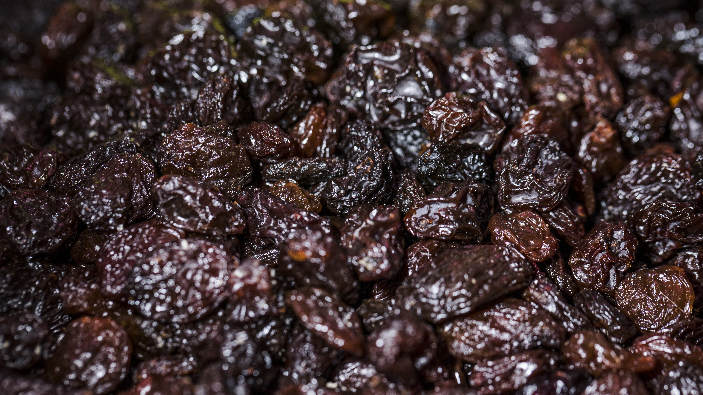

Chile no solo es el principal exportador mundial de ciruela deshidratada: ahora también quiere ser el más sustentable. La industria certificó el primer ciclo del Acuerdo de Producción Limpia (APL) asociado a su Estándar de Sustentabilidad, un hito que ordena al sector en torno a criterios ambientales medibles y que llega en el momento justo, cuando los mercados premium ya no preguntan solo por calibre y precio, sino por cómo se produce.

Ocho plantas, el 68% de la producción, certificadas
En este primer ciclo, ocho plantas procesadoras —que concentran cerca del 68% de la producción sectorial— obtuvieron la certificación otorgada por la Agencia de Sustentabilidad y Cambio Climático (ASCC) de Corfo. El estándar evalúa tres frentes concretos: eficiencia hídrica, eficiencia energética y gestión de residuos. No son consignas: son indicadores auditables que hoy pesan en las decisiones de compra de cadenas europeas y asiáticas.
Un segundo APL que llega hasta el campo
El movimiento no se queda en la planta. Se puso en marcha un segundo APL orientado a la producción primaria —los huertos que abastecen a la industria del deshidratado— para extender los criterios de sustentabilidad al origen y asegurar trazabilidad a lo largo de toda la cadena de valor. La iniciativa es coordinada por Chileprunes (la asociación gremial de procesadores y exportadores) con el respaldo del programa Chile Origen Consciente del Ministerio de Agricultura.
Por qué esto define quién llega más lejos
Los números explican por qué el sector se toma esto en serio. Solo en los primeros diez meses de 2025, Chile exportó 75.800 toneladas de ciruela deshidratada por US$ 247,2 millones, abasteciendo a cerca de 80 mercados. El cultivo suma unas 13.350 hectáreas de ciruelo europeo, con el 72% concentrado en la Región de O'Higgins, y el 86% de la producción se destina al deshidratado. Con esa escala, la sustentabilidad deja de ser un plus: es la condición de entrada a los compradores que exigen huella hídrica, energía limpia y trazabilidad verificable.
Dicho simple: en un mercado global con inventarios ajustados y compradores más selectivos, el origen certificado se convierte en el argumento de venta. Quien pueda demostrar de dónde viene su fruta y cómo se produjo, negocia mejor y accede a las góndolas más rentables.
La mirada de Prunavita
En Prunavita celebramos este avance porque confirma la dirección en la que trabajamos desde siempre: la calidad no se declara, se demuestra. Como actor de un sector líder, entendemos que el comprador internacional de hoy no busca solo un proveedor barato, sino un socio confiable que domine la trazabilidad, los certificados y el cumplimiento —de la sustentabilidad a la inocuidad—.
Por eso acompañamos a compradores y exportadores en toda la cadena: proveemos ciruela deshidratada premium chilena con trazabilidad de origen, operamos la exportación integral con documentación y certificados en regla, y respaldamos a las plantas con asesorías de inocuidad y certificaciones (HACCP, BRC, IFS) que se complementan con estos nuevos estándares de sustentabilidad. Para las empresas extranjeras que quieren comprar en Chile con respaldo local, ofrecemos representación comercial: sourcing, control de calidad y supervisión de embarques en origen. Así es como una empresa robusta y que sabe lo que hace convierte una tendencia del sector en una ventaja concreta para su cliente.
Fuentes consultadas: La Tercera — Chile fortalece su liderazgo mundial en ciruela deshidratada con certificación sustentable y reportes del sector (Chileprunes, Agencia de Sustentabilidad y Cambio Climático de Corfo, programa Chile Origen Consciente). Datos de exportación: enero–octubre 2025. Análisis y redacción: equipo Prunavita.